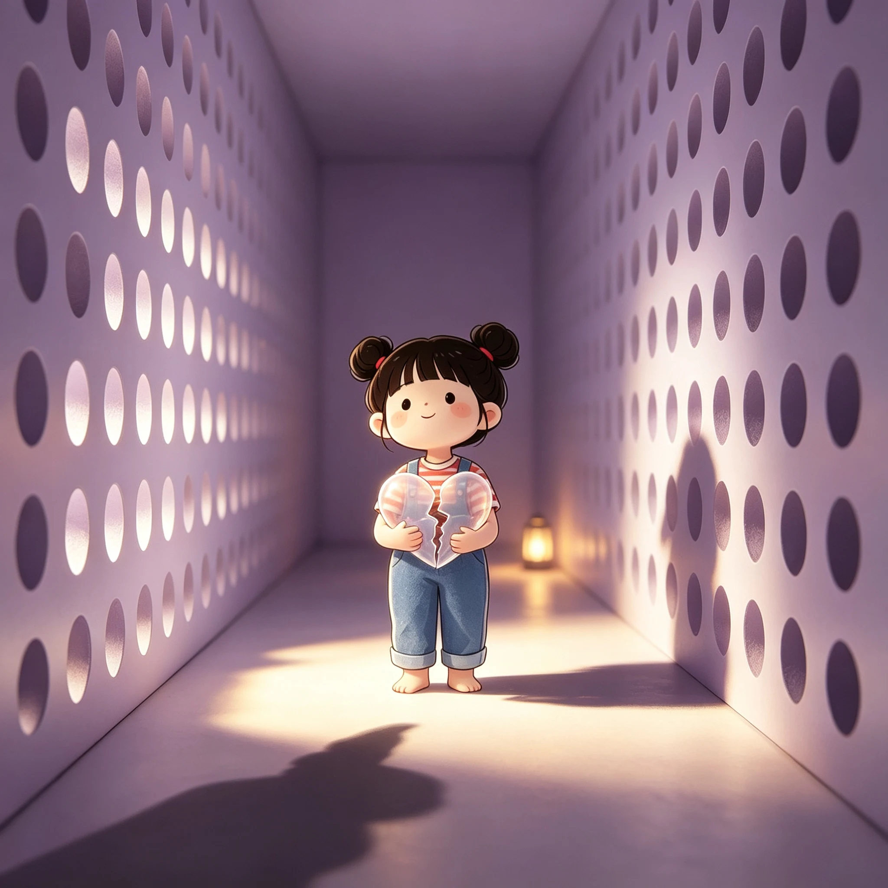
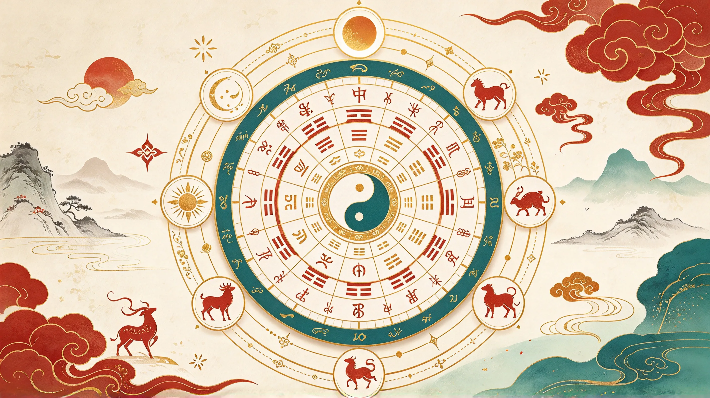

內容站點佈局
依產業打造垂直內容站點，知識庫與商品展示並進，建立權威入口。
- 跨產業領域規劃
- 知識庫＋商品展示
- 單一入口整合
我們不只幫你做一個網站，而是幫你佈局一整座能自己帶來流量的內容站點群。

從內容到流量、從曝光到數據，一站式完成數位佈局。
依產業打造垂直內容站點，知識庫與商品展示並進，建立權威入口。
搜尋引擎、語音助理與生成式 AI 三面向優化，讓品牌被找到、被引用。
內容行銷、社群與流量獲取並進，把內容變成持續進站的動能。
內容持續產出、自動更新，維持搜尋新鮮度，讓流量不間斷。
不是做完網站就結束，而是一套持續成長的循環。
搜尋、社群、AI 推薦全渠道露出
內容站點轉化訪客為客戶
流量與行為數據回饋
以數據驅動內容與策略升級

寓言 × 金句 × 遊戲 × 測驗的沉浸式特殊版型網站，釋放無限想像力。

星座算命 × 塔羅盤 × 人類圖最強旗艦平台，免費線上算命運勢。

不動產區段行情、租金地圖與試算、都市更新投資分析的專業入口。

28 座音樂主題互動站，用五種方式重新愛上音樂，讓音樂可以被玩、被聽、被看懂。

當代東方美學 Grid 圖庫，收錄陶藝、雕塑、茶道具、文玩、玉石等藝術作品。
從萬寶龍到你手上的那張紙，品牌、結構、上墨、墨水到保養的鋼筆百科全書，讓文具控成為鋼筆控。

寵物品種圖鑑百科。

出土於湖北隨州的戰國早期青銅禮樂重器，65 件編鐘音域跨五個半八度，一鐘雙音，改寫世界音樂史的驚世發現。

一百位金庸江湖人物的心理畫像，用現代心理學透視刀光劍影之外的愛恨情仇與人格底色。

當代藝品展售與藝術家平台，以數位畫廊形式呈現精品藝術收藏，匯聚兩岸三地新銳與資深藝術家作品。

毛孩與空間的對話。

用邏輯理解毛孩。

台灣房地產資訊與建案資料平台，提供最完整的房屋交易、行情與區域分析，是購屋與投資者的專業參考入口。

寵物照護知識學堂。

探索音樂家的怪癖與天才，從爵士到古典，解構音符背後的靈魂與不為人知的創作祕辛。

從古埃及神廟到當代摩天大樓，橫跨千年的人類營造智慧視覺導覽。

聖經經文導讀、卷別地圖與人物事件索引，認識這部影響世界文明的經典。
房貸試算、租金投報率與持有成本一站式計算，購屋投資必備工具。
從地目變更、都市計畫到建照申請，完整解析土地開發的法規流程。